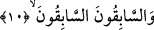
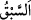
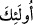
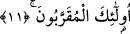

10. (Hayırda) önde olanlar,(ecirde de) öndedirler.
Bunlar yukarıda zikri geçen üç sınıftan üçüncüsüdürler. Allah Teâlâ, onların zikrini
güzel halleriyle birlikte açıklamak için buruya ertelemiştir.
Âyette geçen “sâbikûn” kelimesinin türetildiği
(sebk) kelimesinin anlamı
“yürüyüşte öne geçmek”tir. Sonra başka şeylerde de “öne geçme” anlamına kullanılır
olmuştur. Her iki “es-Sâbikûn”, mübtedâ ve haberdir. Âyet-i kerîmenin mânâsı şöyle
olur: Hayırlılıkta önde olanlar, durumları şöhret bulmuş ve iyilikleri herkesçe bilinen
kimselerdir. Yahut, cümledeki birinci “es-sâbikûn” mübteda, ikincisi ise birinciyi
güçlendirip pekiştiren ve büyüklüğünü ifâde etmek için tekrar edilen kelimedir. Haber
bir sonraki ayette
(ülâike) kelimesiyle başlayan cümledir.
Bürhan adlı eserde şöyle denilmiştir: Bazı müfessirlere göre, ikinci “es-sâbikûn”
kelimesinin başında bir “mâ” harfi takdir edilir ki, önceki kelime bu harfi gösterdiği
için hazf edilmiştir. İşte bu sâbikûn, gerçek ortaya çıktığı zaman hiç beklemeksizin
herkesten önce îman edip itâat ederek herkesi geçenlerdir. Burada “önde olmak, öne
geçmek”ten maksad, zaman itibariyle öne geçmektir. Yahut dînî kemâlât ve olgunlukta,
kulluk görevini yerine getirme fazîletlerinde herkesten önde olmak demektir. Yahut önde
olmak şerefçe önde olmak demektir.
Nitekim, Rağıb şöyle söylemiştir: “Sebk önde olmak”, fazilet ve erdemi elde etmek
mânâsına istiâre olarak kullanılır. Bütün bunlara göre “Önde olanlar, ecirde de
öndedirler”; yâni, sâlih ameller işleyerek Allah’ın sevâbını kazanmakta ve cennetine
girmekte de öne geçenlerdir, demektir.
11. İşte bunlar, (Allah’a) en yakın olanlardır.
“İşte bunlar” bu yüce nitelikte sıfatlananlar “(Allah’a) en yakın olanlardır.” Yâni,
çok büyük olan Arş-ı ilâhiye dereceleri yakınlaştırılmış, mertebeleri yüceltilmiş ve
tertemiz nefisleri Allah katında kudsî makamlara yükseltilmiş kimselerdir.
Ben âcizane derim ki, bu mânâ Peygamberimiz (s.a.)’in şu hadisinden anlaşılır:
“Allah’tan istediğinizde O’ndan firdevs cennetini isteyiniz. Çünkü Firdevs cenneti,
cennetin tam ortası ve en yüksek yeridir. Üzerinde de Rahman olan Allah’ın Arşı
vardır.”[193] Bu sebeple, cennetlerin tavanı olan Arş’a yakın bulunduğu için Firdevs
cennetinin, Allah’a en yakın kulların makamı olduğu ortaya çıkar.
Allah Teâlâ, “işte onlar yaklaşanlardır” değil “yakınlaştırılanlardır” buyurdu. Zira